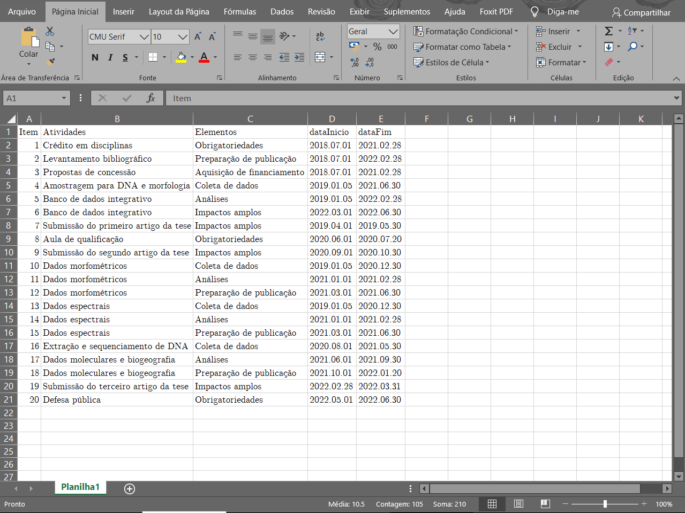
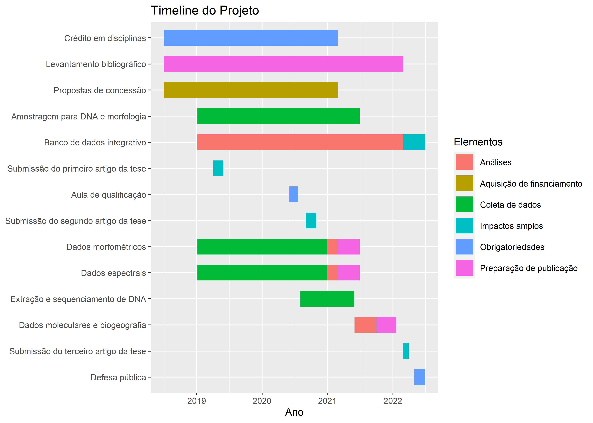

Criando um cronograma de atividades no R [Portuguese text]
Aprenda a gerar um simples cronograma de atividades no estilo Gantt.
Neste tutorial você aprenderá a gerar um simples cronograma de atividades no R usando os pacotes tidyverse e talvez um editor de planilhas (p.ex. MS Excel, Open Office Calc) – o “talvez” significa que você pode fazer tudo no R.
O estilo do cronograma a ser implementado aqui (adaptado de Jeremy B. Yoder), simula um Gantt chart (devido ao seu invetor Henry Gantt, 1861-1919), o qual corresponde a um gráfico de barras que ilustra o cronograma de um projeto. Este gráfico lista as tarefas a serem realizadas no eixo vertical (y) e os intervalos de tempo no eixo horizontal (x). A largura das barras horizontais no gráfico mostra a duração de cada atividade. Saiba mais clicando aqui.
Dica: Se você está interessado(a) em solicitar fundos para sua pesquisa, aí está uma forma de apresentar um cronograma diferenciado para seu projeto!
Esta postagem foi inteiramente produzida em ambiente R Studio, usando os pacotes rmarkdown (Allaire et al. 2021; Xie, Allaire, and Grolemund 2018; Xie, Dervieux, and Riederer 2020), rmdformats (Barnier 2021), remedy (Fay, Sidi, and Smith 2018), knitr (Xie 2014, 2015, 2021) e citr (Aust 2019).
1. Instalação dos pacotes necessários
Antes de iniciarmos, é importante que você tenha a seguinte coleção de pacotes instalada:
tidyverse(Wickham et al. 2019)
#instala o pacote, se for necessário:
if(!require(tidyverse)) install.packages("tidyverse", dependencies=TRUE)Você pode esboçar uma timeline do seu projeto em um arquivo de texto delimitado através de um editor de planilha (é muito mais prático!) e, em seguida, criar um gráfico a partir dele em apenas algumas linhas de código – a partir do Tópico 4.
Aqui, usei o MS Excel:

Uma alternativa open source ao Microsoft Office é o LibreOffice. Você pode fazer o download dele clicando aqui.
2. Importa o arquivo de exemplo gerado no editor de planilhas
#importando o arquivo
URL = "https://drive.google.com/u/0/uc?id=1xbNxrElxkdIMzZLzh1vAFk6RmBRZMH7j&export=download"
meuCronograma = read.csv(URL,
header=TRUE, #se verdadeiro, contém os nomes das variáveis como primeira linha
sep="\t", #separado por tabulação
encoding="UTF-8") #melhor especificar - no meu caso usei acentuação gráfica então foi necessário
#mostra o objeto
meuCronograma## Item Atividades Elementos
## 1 1 Crédito em disciplinas Obrigatoriedades
## 2 2 Levantamento bibliográfico Preparação de publicação
## 3 3 Propostas de concessão Aquisição de financiamento
## 4 4 Amostragem para DNA e morfologia Coleta de dados
## 5 5 Banco de dados integrativo Análises
## 6 6 Banco de dados integrativo Impactos amplos
## 7 7 Submissão do primeiro artigo da tese Impactos amplos
## 8 8 Aula de qualificação Obrigatoriedades
## 9 9 Submissão do segundo artigo da tese Impactos amplos
## 10 10 Dados morfométricos Coleta de dados
## 11 11 Dados morfométricos Análises
## 12 12 Dados morfométricos Preparação de publicação
## 13 13 Dados espectrais Coleta de dados
## 14 14 Dados espectrais Análises
## 15 15 Dados espectrais Preparação de publicação
## 16 16 Extração e sequenciamento de DNA Coleta de dados
## 17 17 Dados moleculares e biogeografia Análises
## 18 18 Dados moleculares e biogeografia Preparação de publicação
## 19 19 Submissão do terceiro artigo da tese Impactos amplos
## 20 20 Defesa pública Obrigatoriedades
## dataInicio dataFim
## 1 2018.07.01 2021.02.28
## 2 2018.07.01 2022.02.28
## 3 2018.07.01 2021.02.28
## 4 2019.01.05 2021.06.30
## 5 2019.01.05 2022.02.28
## 6 2022.03.01 2022.06.30
## 7 2019.04.01 2019.05.30
## 8 2020.06.01 2020.07.20
## 9 2020.09.01 2020.10.30
## 10 2019.01.05 2020.12.30
## 11 2021.01.01 2021.02.28
## 12 2021.03.01 2021.06.30
## 13 2019.01.05 2020.12.30
## 14 2021.01.01 2021.02.28
## 15 2021.03.01 2021.06.30
## 16 2020.08.01 2021.05.30
## 17 2021.06.01 2021.09.30
## 18 2021.10.01 2022.01.20
## 19 2022.02.28 2022.03.31
## 20 2022.05.01 2022.06.30#informa as dimensões do objeto criado (número de linhas e colunas)
dim(meuCronograma)## [1] 20 5Se for usar a opção acima (Tópico 2), avance para o Tópico 4.
3. Como esboçar os dados do cronograma diretamente no R
A seguir, cada objeto criado corresponde a uma coluna no nosso data.frame contendo os dados do cronograma. Vale lembrar que o comprimento de cada objeto deve ser igual.
Atividades = c("Crédito em disciplinas", "Levantamento bibliográfico", "Propostas de concessão", "Amostragem para DNA e morfologia",
"Banco de dados integrativo", "Banco de dados integrativo", "Submissão do primeiro artigo da tese", "Aula de qualificação",
"Submissão do segundo artigo da tese", "Dados morfométricos", "Dados morfométricos", "Dados morfométricos", "Dados espectrais",
"Dados espectrais", "Dados espectrais", "Extração e sequenciamento de DNA", "Dados moleculares e biogeografia",
"Dados moleculares e biogeografia", "Submissão do terceiro artigo da tese", "Defesa pública")
Item = seq(1:length(Atividades))
Elementos = c("Obrigatoriedades", "Preparação de publicação", "Aquisição de financiamento", "Coleta de dados", "Análises", "Impactos amplos",
"Impactos amplos", "Obrigatoriedades", "Impactos amplos", "Coleta de dados", "Análises", "Preparação de publicação", "Coleta de dados",
"Análises", "Preparação de publicação", "Coleta de dados", "Análises", "Preparação de publicação", "Impactos amplos", "Obrigatoriedades")
#observe o formato da data
dataInicio = c("2018.07.01", "2018.07.01", "2018.07.01", "2019.01.05", "2019.01.05", "2022.03.01", "2019.04.01",
"2020.06.01", "2020.09.01", "2019.01.05", "2021.01.01", "2021.03.01", "2019.01.05", "2021.01.01",
"2021.03.01", "2020.08.01", "2021.06.01", "2021.10.01", "2022.02.28", "2022.05.01")
dataFim = c("2021.02.28", "2022.02.28", "2021.02.28", "2021.06.30", "2022.02.28", "2022.06.30", "2019.05.30",
"2020.07.20", "2020.10.30", "2020.12.30", "2021.02.28", "2021.06.30", "2020.12.30", "2021.02.28",
"2021.06.30", "2021.05.30", "2021.09.30", "2022.01.20", "2022.04.30", "2022.06.30")
#Criando o data.frame: cada objeto criado se tornará uma coluna
meuCronograma = data.frame(Item, Atividades, Elementos, dataInicio, dataFim)
#mostra o objeto
meuCronograma## Item Atividades Elementos
## 1 1 Crédito em disciplinas Obrigatoriedades
## 2 2 Levantamento bibliográfico Preparação de publicação
## 3 3 Propostas de concessão Aquisição de financiamento
## 4 4 Amostragem para DNA e morfologia Coleta de dados
## 5 5 Banco de dados integrativo Análises
## 6 6 Banco de dados integrativo Impactos amplos
## 7 7 Submissão do primeiro artigo da tese Impactos amplos
## 8 8 Aula de qualificação Obrigatoriedades
## 9 9 Submissão do segundo artigo da tese Impactos amplos
## 10 10 Dados morfométricos Coleta de dados
## 11 11 Dados morfométricos Análises
## 12 12 Dados morfométricos Preparação de publicação
## 13 13 Dados espectrais Coleta de dados
## 14 14 Dados espectrais Análises
## 15 15 Dados espectrais Preparação de publicação
## 16 16 Extração e sequenciamento de DNA Coleta de dados
## 17 17 Dados moleculares e biogeografia Análises
## 18 18 Dados moleculares e biogeografia Preparação de publicação
## 19 19 Submissão do terceiro artigo da tese Impactos amplos
## 20 20 Defesa pública Obrigatoriedades
## dataInicio dataFim
## 1 2018.07.01 2021.02.28
## 2 2018.07.01 2022.02.28
## 3 2018.07.01 2021.02.28
## 4 2019.01.05 2021.06.30
## 5 2019.01.05 2022.02.28
## 6 2022.03.01 2022.06.30
## 7 2019.04.01 2019.05.30
## 8 2020.06.01 2020.07.20
## 9 2020.09.01 2020.10.30
## 10 2019.01.05 2020.12.30
## 11 2021.01.01 2021.02.28
## 12 2021.03.01 2021.06.30
## 13 2019.01.05 2020.12.30
## 14 2021.01.01 2021.02.28
## 15 2021.03.01 2021.06.30
## 16 2020.08.01 2021.05.30
## 17 2021.06.01 2021.09.30
## 18 2021.10.01 2022.01.20
## 19 2022.02.28 2022.04.30
## 20 2022.05.01 2022.06.30#informa as dimensões do objeto criado (número de linhas e colunas)
dim(meuCronograma)## [1] 20 5Aqui, o resultado gerado pelo código acima é igual ao gerado pelo editor de planilhas no Tópico 3.
4. Prepara os dados
#transformando as colunas 'Atividades' e 'Elementos' em fatores
acts = levels(as.factor(meuCronograma$Atividades))
els = levels(as.factor(meuCronograma$Elementos))
library("tidyverse")
PreparaCronograma = gather(meuCronograma, "state", "date", 4:5) %>%
mutate(date = as.Date(date, "%Y.%m.%d"), Atividades=factor(Atividades, acts[length(acts):1]), Elementos=factor(Elementos, els))
#mostra o objeto
PreparaCronograma## Item Atividades Elementos
## 1 1 Crédito em disciplinas Obrigatoriedades
## 2 2 Levantamento bibliográfico Preparação de publicação
## 3 3 Propostas de concessão Aquisição de financiamento
## 4 4 Amostragem para DNA e morfologia Coleta de dados
## 5 5 Banco de dados integrativo Análises
## 6 6 Banco de dados integrativo Impactos amplos
## 7 7 Submissão do primeiro artigo da tese Impactos amplos
## 8 8 Aula de qualificação Obrigatoriedades
## 9 9 Submissão do segundo artigo da tese Impactos amplos
## 10 10 Dados morfométricos Coleta de dados
## 11 11 Dados morfométricos Análises
## 12 12 Dados morfométricos Preparação de publicação
## 13 13 Dados espectrais Coleta de dados
## 14 14 Dados espectrais Análises
## 15 15 Dados espectrais Preparação de publicação
## 16 16 Extração e sequenciamento de DNA Coleta de dados
## 17 17 Dados moleculares e biogeografia Análises
## 18 18 Dados moleculares e biogeografia Preparação de publicação
## 19 19 Submissão do terceiro artigo da tese Impactos amplos
## 20 20 Defesa pública Obrigatoriedades
## 21 1 Crédito em disciplinas Obrigatoriedades
## 22 2 Levantamento bibliográfico Preparação de publicação
## 23 3 Propostas de concessão Aquisição de financiamento
## 24 4 Amostragem para DNA e morfologia Coleta de dados
## 25 5 Banco de dados integrativo Análises
## 26 6 Banco de dados integrativo Impactos amplos
## 27 7 Submissão do primeiro artigo da tese Impactos amplos
## 28 8 Aula de qualificação Obrigatoriedades
## 29 9 Submissão do segundo artigo da tese Impactos amplos
## 30 10 Dados morfométricos Coleta de dados
## 31 11 Dados morfométricos Análises
## 32 12 Dados morfométricos Preparação de publicação
## 33 13 Dados espectrais Coleta de dados
## 34 14 Dados espectrais Análises
## 35 15 Dados espectrais Preparação de publicação
## 36 16 Extração e sequenciamento de DNA Coleta de dados
## 37 17 Dados moleculares e biogeografia Análises
## 38 18 Dados moleculares e biogeografia Preparação de publicação
## 39 19 Submissão do terceiro artigo da tese Impactos amplos
## 40 20 Defesa pública Obrigatoriedades
## state date
## 1 dataInicio 2018-07-01
## 2 dataInicio 2018-07-01
## 3 dataInicio 2018-07-01
## 4 dataInicio 2019-01-05
## 5 dataInicio 2019-01-05
## 6 dataInicio 2022-03-01
## 7 dataInicio 2019-04-01
## 8 dataInicio 2020-06-01
## 9 dataInicio 2020-09-01
## 10 dataInicio 2019-01-05
## 11 dataInicio 2021-01-01
## 12 dataInicio 2021-03-01
## 13 dataInicio 2019-01-05
## 14 dataInicio 2021-01-01
## 15 dataInicio 2021-03-01
## 16 dataInicio 2020-08-01
## 17 dataInicio 2021-06-01
## 18 dataInicio 2021-10-01
## 19 dataInicio 2022-02-28
## 20 dataInicio 2022-05-01
## 21 dataFim 2021-02-28
## 22 dataFim 2022-02-28
## 23 dataFim 2021-02-28
## 24 dataFim 2021-06-30
## 25 dataFim 2022-02-28
## 26 dataFim 2022-06-30
## 27 dataFim 2019-05-30
## 28 dataFim 2020-07-20
## 29 dataFim 2020-10-30
## 30 dataFim 2020-12-30
## 31 dataFim 2021-02-28
## 32 dataFim 2021-06-30
## 33 dataFim 2020-12-30
## 34 dataFim 2021-02-28
## 35 dataFim 2021-06-30
## 36 dataFim 2021-05-30
## 37 dataFim 2021-09-30
## 38 dataFim 2022-01-20
## 39 dataFim 2022-04-30
## 40 dataFim 2022-06-305. Plota o cronograma
PlotaCronograma = ggplot(PreparaCronograma, aes(date, reorder(Atividades, desc(Item)), color=Elementos, group=Item)) +
geom_line(size=10) +
labs(x="Ano", y=NULL, title="Timeline do Projeto")+
theme_gray(base_size=14)
6. Salva o cronograma como uma figura
ggsave("MeuCronogramaNoR.tiff", plot=PlotaCronograma,
width=28, height=20, units="cm", dpi=300, compression="lzw") #define os parâmetros da imagemPostagem originalmente publicada no meu perfil do RPubs. Toda semana tem conteúdo novo por lá!
Até a próxima! See you soon!
Referências
Allaire, JJ, Yihui Xie, Jonathan McPherson, Javier Luraschi, Kevin Ushey, Aron Atkins, Hadley Wickham, Joe Cheng, Winston Chang, and Richard Iannone. 2021. Rmarkdown: Dynamic Documents for R. https://github.com/rstudio/rmarkdown.
Aust, Frederik. 2019. Citr: ’RStudio’ Add-in to Insert Markdown Citations. https://github.com/crsh/citr.
Barnier, Julien. 2021. Rmdformats: HTML Output Formats and Templates for ’Rmarkdown’ Documents. https://CRAN.R-project.org/package=rmdformats.
Fay, Colin, Jonathan Sidi, and Luke Smith. 2018. Remedy: ’RStudio’ Addins to Simplify ’Markdown’ Writing. https://CRAN.R-project.org/package=remedy.
Wickham, Hadley, Mara Averick, Jennifer Bryan, Winston Chang, Lucy D’Agostino McGowan, Romain François, Garrett Grolemund, et al. 2019. “Welcome to the tidyverse.” Journal of Open Source Software 4 (43): 1686. https://doi.org/10.21105/joss.01686.
Xie, Yihui. 2014. “Knitr: A Comprehensive Tool for Reproducible Research in R.” In Implementing Reproducible Computational Research, edited by Victoria Stodden, Friedrich Leisch, and Roger D. Peng. Chapman; Hall/CRC. http://www.crcpress.com/product/isbn/9781466561595.
———. 2015. Dynamic Documents with R and Knitr. 2nd ed. Boca Raton, Florida: Chapman; Hall/CRC. https://yihui.org/knitr/.
———. 2021. Knitr: A General-Purpose Package for Dynamic Report Generation in R. https://yihui.org/knitr/.
Xie, Yihui, J. J. Allaire, and Garrett Grolemund. 2018. R Markdown: The Definitive Guide. Boca Raton, Florida: Chapman; Hall/CRC. https://bookdown.org/yihui/rmarkdown.
Xie, Yihui, Christophe Dervieux, and Emily Riederer. 2020. R Markdown Cookbook. Boca Raton, Florida: Chapman; Hall/CRC. https://bookdown.org/yihui/rmarkdown-cookbook.
Caroline C. Vasconcelos
Research Fellow
My research interests include taxonomy and systematics (especially neotropical Sapotaceae), spectroscopy as a integrative tools, Amazonian flora, species distribution modeling, floristic studies, and tropical forest ecology.